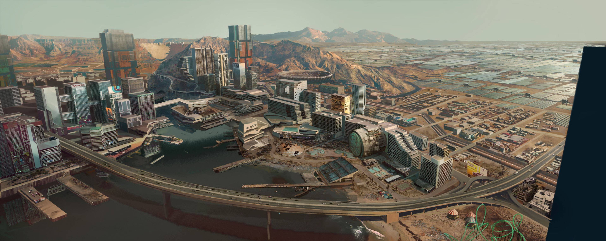
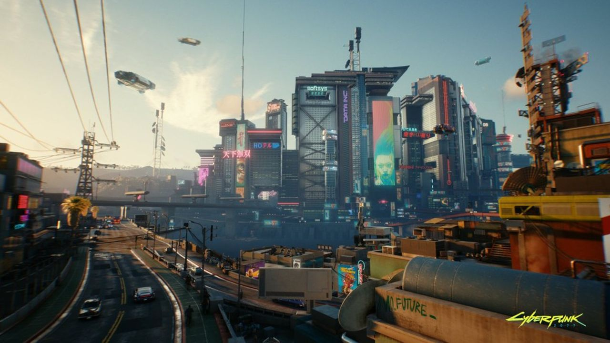

Que vous veniez d'arriver à Night City ou y viviez depuis le gouvernement Kress, ce site est là pour vous aider. Explorez la ville et découvrez des endroits incontournables choisis par nos soins.
Impressionnez vos amis avec des tas d'anecdotes en lisant nos articles sur l'histoire et les quartiers de la ville. Ne fréquentez que les lieux branchés d'Heywood et évitez les gangs grâce à des conseils de sécurité en provenance directe du NCPD.
Quels que soient vos rêves à Night City, ce site est là pour vous guider et vous permettre de les réaliser.


